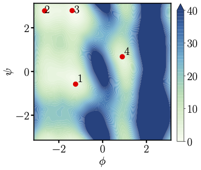

Multiscale modeling
simulation of complex molecular systems
Machine learning for scientific computing
Multi-scale modeling:
Background
Dirac, Paul Adrien Maurice.
Quantum mechanics of many-electron systems.
The right physical principle for most of what we are interested in is already provided by the principles of quantum mechanics (QM).
The ability to reduce everything to simple fundamental laws does not imply the ability to start from those laws and reconstruct the universe.
The constructionist hypothesis breaks
down when confronted with the twin
difficulties of scale and complexity.
Anderson, Philip W.
More Is Different: Broken symmetry and the nature of the hierarchical structure of science.
From atomistic to coarse-grained dynamics
Atomistic model: Hamiltonian dynamics in the canonical form with \(H(\mathbf z) \) and \(\mathbf z = (\mathbf q, \mathbf p) \in \mathbb R^{2N_{MD}}\):
\[
\begin{aligned}
\dot{\mathbf z } &= \mathbf{J} \nabla H(\mathbf z), \quad H(\mathbf z) = \frac{1}{2} \mathbf p^T \mathbf{m}^{-1} \mathbf p + V(\mathbf q),
\end{aligned}
\]
Coarse-grained (CG) model: Reduce the degrees of freedom by mapping \(\mathbf z\) to CG variables \(\mathbf Z = (\mathbf Q, \mathbf P)\in \mathbb R^{2N_{CG}}\).
By the Mori-Zwanzig formalism, the dynamics can be described as:
Written as an equivalent Markovian system with auxiliary variables \(\bm \zeta\):
\[
\begin{aligned}
\dot{\mb Q} &= \mb M^{-1}\mb P \\
\dot{\mb P} &= -\nabla U(\mb Q) + \bm \Xi(\mb Q)\bm\zeta \\
\dot{\bm\zeta} &= - \bm \Xi(\mb Q)^T \mb V - \bm\Lambda \bm\zeta + \bm \xi(t).
\end{aligned}
\]
The model retains the consistent invariant distribution
\[
\rho_{\rm eq}(\mb Q, \mb P, \bm\xi) \propto \exp[{-\beta(U(\mb Q) + \mb P^T \mb M^{-1} \mb P/2 + \bm \zeta^T \bm\zeta/2})]
\]
The friction matrix \(\bm \Xi(\mb Q)\) do not appear in the invariant distribution, but importantly affect the dynamics
\(\rho(\mb Q, \mb P , t | \mb Q_0, \mb P_0, 0)\)
Polymer melt (Nonnewtonian behavior)
normalized correlations of the Transverse Hydrodynamic Modes
Conformational dynamics
Alanine dipeptide molecule

Free Energy Surface
2D Transition
Ecological system
cooperated with Hayden Schaeffer and Tracy Yu
Measure Valued Neural Network
Instead of interested in the interactions between individuals.
We focus on the interactions between an individual and the distribution of the population.
Universial approximation theorem and convergence analysis for the new architecture.
Numerical result
Nonconservative System
ODE or SDE description of the nonconservative system
For example:
phase separation - allen cahn equation
\[
\partial_t u = \Delta u + u - u^3.
\]
chemotactic - Keller-Segel model
\[
\partial_t u = \Delta u - \chi \nabla \cdot (u \nabla v), \quad \partial_t v = D \Delta v + \alpha u - \beta v.
\]
Approximate the solution \(u\) by the empirical measure of particles:
\[
t \to \mu^N(t) = \frac{1}{N} \sum_{i \in \mathcal I(N,t)} \delta_{\mathbf X_i^N(t)}.
\]
Advection and diffusion step: Each particle follows an SDE:
\(
dX_t = b(X_t)\,dt + \sigma\,dW_t
\)
Reaction step: The reaction term \( r(u)u \) is handled by a stochastic birth–death process:
For \( r(x)\!>\!0 \): particles branch with rate \( e^{r(x)\tau}-1 \).
For \( r(x)\!<\!0 \): particles die with survival probability \( e^{r(x)\tau} \).
Under the Global Lipschitz and Boundedness condition of the coefficients, we can prove the convergence of measure-valued process \( \mu^N \) to the solution of the target PDE with respect to \( H^{-s} \) norm for \( s > d/2 + 1 \).